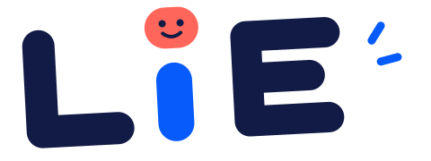
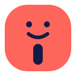
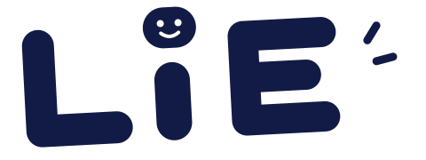
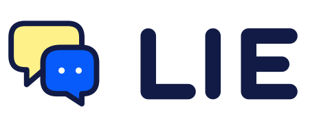
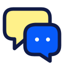
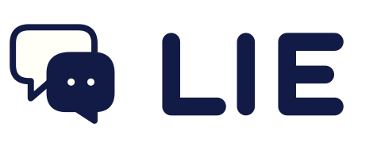
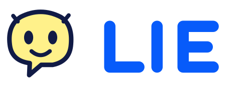
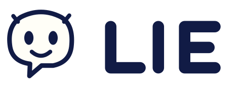
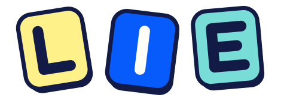
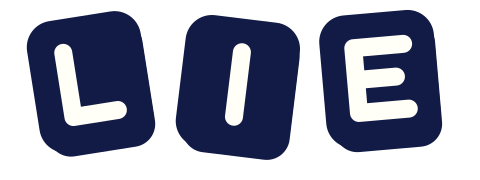

四种结构 · 同一套轻松配色 · 先选方向，再精修



把表情藏进字母圆点，直接记住产品名。更像一个活泼的游戏品牌，角色感轻、识别直接。



两个气泡一来一回，把“对话”放在第一位。符号与字标可拆开，适合导航、应用图标与分享。


让气泡长出表情，形成独立的友好小角色。更亲切、更有陪伴感，也给后续品牌物料留空间。


三块不太安分的字母积木，强调轻松游戏感。图形更厚实、有节奏，缩小后保留简单的字母块。